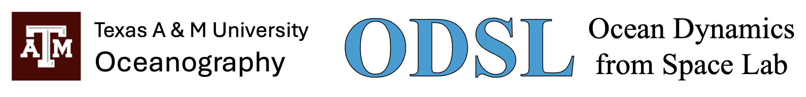

Home
Team
Research
Publications
Data & Tools
News
Contact
Data & Tools
Access our datasets and tools for studying ocean dynamics from satellite data.
This page is under construction. New content will be added soon.
ODSL Code Repository
LLC4320 MITgcm
Visualize LLC4320 Zeta
SWOT
L2_LR_SSH Versions